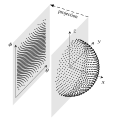

Fibonacci Spiral Based Numerical Grid
Points on a spherical surface $\mathbb{S}^2$ which form a path in form of a spiral can be expressed in spherical coordinates of the form
\[ \theta=L\phi, \qquad 0 \leq \phi \leq \pi\]
with the polar angle $\phi$ and the azimuth $\theta$, or the latitude and longitude, respectively (Hardin et al., 2016). The factor $L$ gives the slope of the spiral. One generation method of $N$ points defines the two spherical coordinates as
\[\begin{aligned} L =& \; \sqrt{N\pi}, \\ h_k =& \; 1 -\frac{2k-1}{N}, \\ \phi_k =& \; \cos^{-1}(h_k), \\ \theta_k =& \; L\phi_k \end{aligned}\]
for $k = 1,\dots, N$, where the slope $L$ is chosen in order to equalize the distance between adjacent points on the same level of the spiral and points on adjacent levels which differ by $2\pi$ in $\theta$ (Hardin et al., 2016).
A specialized method of creating a set of spiral points implements the Fibonacci sequence
\[ \left\{ F_k \right\} = \left\{1, 1, 2, 3, 5, 8, 13, \dots \right\}\]
and the golden ratio $\varphi = \frac{1 + \sqrt{5}}{2}.$ The general algorithm defines a lattice of points on the square $\left[ 0,1 \right)^2$, which is subsequently mapped to a unit sphere using the Lambert cylindrical equal area projection $\Lambda$:
\[ \Lambda(x,y) = \left( \sqrt{1-(2y-1)^2}\cdot\cos\left(2\pi x\right), \sqrt{1-(2y-1)^2}\cdot\sin\left(2\pi x\right), 2y-1 \right)\]
in Cartesian coordinates, and
\[ \Lambda(x,y) = \left(\cos^{-1}(2y-1), 2\pi x \right) = \left( \phi, \theta \right)\]
in spherical coordinates. The points $(x, y)$ on the square $\left[ 0,1 \right)^2$ are created through
\[ (\tilde x, y)_{F_k} = \left( \frac{iF_{k-1}}{F_k} , \frac{i}{F_k} \right), \qquad 0 \leq i \leq F_k\]
where $x = \tilde x - \lfloor \tilde x \rfloor$ as just the fractional part of $\tilde x$ (Hardin et al., 2016). While this implementation can only be applied for $N+1$ elements, where $N \in \{ F_k \}$, a more general approach involves the golden ratio $\varphi$. Based on Binet's formula the calculation of $(x, y)$ can be changed to
\[ (\tilde x, y)_{N} = \left( \frac{i}{\varphi}, \frac{i}{N} \right), \qquad 0 \leq i \leq N.\]
Manual
# load and use ExESS package
include(joinpath(PathToPackage, "src", "ExESS.jl"))
using .ExESS
# define grid input
R = 1_000_000 # sphere radius [m]
N = 1_000 # number of grid points on the sphere [-]
# create structured grid
grid = FSpiral_2D_sGrid(R, N)Examples
|  |
|---|
| Figure 1: Fibonacci sprial based grid. Spherical Fibonacci spiral based grid, displayed on half a sphere. Right, in cartesian coordinates, left projected onto two dimensions and displayed in angular coordinates. |
Almost all points have equal distances to one another. Numerical analyses of the Fibonacci-based spiral sequence $\omega_N$ in Hardin et al. (2016) found minimal separations to appear at the poles with value $|x_1 - x_4|, \, x_i\in\omega_N$ and maximum hole in the lattice to occurs in the triangle $(x_2, x_3, x_5)$.
API
Missing docstring for FSpiral_2D_sGrid. Check Documenter's build log for details.